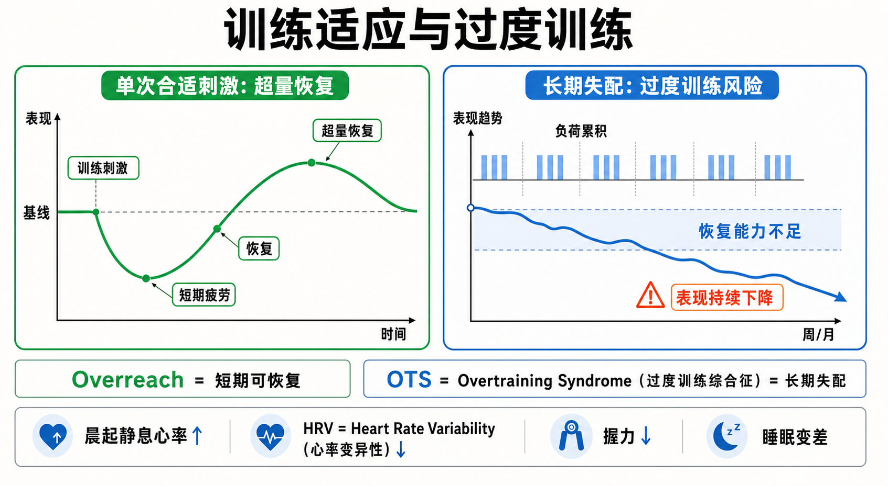

Day 36 · 适应性与过度训练
把训练负荷、恢复窗口和长期疲劳放在同一张图里看，才知道什么时候该加码，什么时候该减量。
一句话总结
训练适应像一笔“压力账”：负荷先让表现下降，恢复把能力拉回并可能超量恢复；如果长期负荷大于恢复能力，表现会持续下滑，这就不再是有效刺激。

绿色曲线表示一次合适刺激后的“短期疲劳 → 恢复 → 超量恢复”；蓝色下降线表示“长期负荷超过恢复能力”这个原因最终发展为“表现持续下降”的结果。
核心要点
- 超量恢复：训练后能力先下降，恢复充分后短暂高于原水平。真实例子
字面意思
身体不只是修回原样，还会短暂把承受能力提高一点，为下一次类似刺激做准备。
大白话
像手机用到低电量后充电，如果恢复到位，会多充出一点备用电量。
训练含义
下一次关键训练要接在恢复后，而不是疲劳最低点。过早加码会堆疲劳，太晚则错过窗口。
深蹲高质量训练后第二天腿沉、速度慢；几天后睡眠和进食到位，同样重量变稳，这才是适应正在兑现。
- GAS 一般适应综合征：身体对压力通常经历警觉、抵抗和衰竭三个阶段。
阶段 身体状态 训练判断 警觉 疲劳、酸痛、表现临时下降 正常刺激开始 抵抗 恢复、重建、能力提高 适合安排下一次关键训练 衰竭 长期下降、恢复失效 必须减量或转介评估 训练是压力源。压力可被恢复承接，就进入适应；压力长期超过资源，就进入失配。
- Overreach：短期可恢复的过度刺激，可以是计划内加压。判断边界
功能性 overreach 通常是数天到数周内可恢复，后面必须接减量或恢复周。它不是“每天练崩”的借口。
训练含义只适合有记录、有恢复安排的人。若减量后表现回升，说明疲劳释放；若仍持续下滑，要重新评估负荷。
- OTS（Overtraining Syndrome，过度训练综合征）：长期负荷与恢复失配，表现下降可拖到数周或数月。
OTS 全称 Overtraining Syndrome，中文是过度训练综合征。它不是一次状态不好，也不是一周训练累，而是长期压力账还不上：成绩下降、睡眠变浅、情绪变差、免疫下降、训练欲望降低。
教练不应直接诊断过度训练综合征；长期不改善时，应建议运动医学或医学评估。
- 副交感型与交感型：不同项目常见表现不一样。
类型 更常见于 典型信号 副交感型 耐力项目 低活力、训练兴奋性差、疲劳感重 交感型 力量/爆发项目 心率偏高、睡眠浅、焦躁、恢复慢 - 监控指标：晨起静息心率、HRV（Heart Rate Variability，心率变异性）、握力和训练表现要看连续趋势。
晨起静息心率持续高于基线约 5 bpm、HRV（Heart Rate Variability，心率变异性）连续下降、握力或速度下降，都提示恢复压力变大。单日异常不能直接下结论，要和睡眠、压力、营养、训练输出一起看。
- 干预原则：先减量、保技术、看趋势，必要时转介。
出现多项预警时，第一步不是加咖啡因硬顶，而是停止继续加量，把高强度改成轻技术、恢复或休息，并连续记录 3–7 天趋势。
常见误区
❌ 以为“越累越有效”。✅ 有效训练必须能被恢复承接，否则只是堆疲劳。
❌ 以为表现下降就一定是 OTS（Overtraining Syndrome，过度训练综合征）。✅ 短期下降可能只是正常疲劳或 overreach，关键看持续时间和减量后的反应。
❌ 只看一个指标。✅ 心率、HRV（心率变异性）、握力、速度、睡眠和主观疲劳要合并看趋势。
记忆口诀
“刺激先下，恢复再上；短期可还叫 reach，长期还不上才危险；心率、HRV 心率变异性、握力、睡眠，一起看趋势。”
翻转卡复习
实操关联
- 力量训练：如果连续几次同重量速度变慢、RPE 升高、睡眠变差，先降总量而不是继续加组。
- 耐力训练：若配速没变但心率更高、主观更累，说明恢复或环境压力可能变大。
- 减脂期：热量缺口本身占用恢复预算，不宜同时大幅提高强度和总量。
- 数据记录：把晨起心率、HRV（心率变异性）、握力、睡眠和训练表现放进同一张趋势表。
- 减量周：常见做法是降低总量 30%–50%，保留动作模式和技术质量。